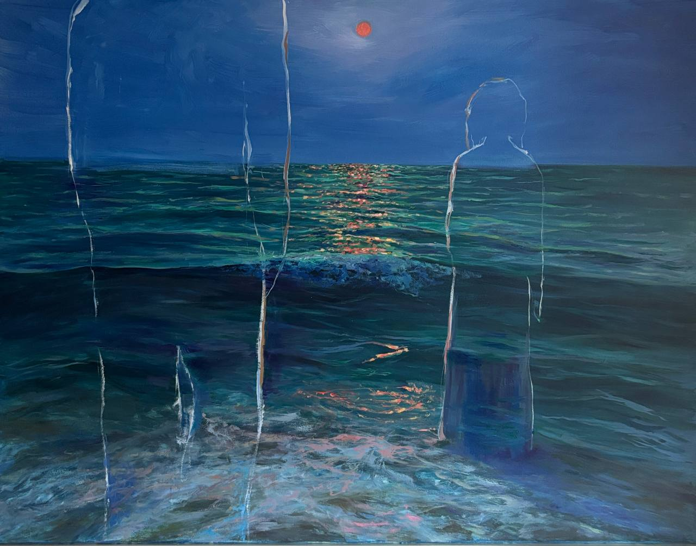
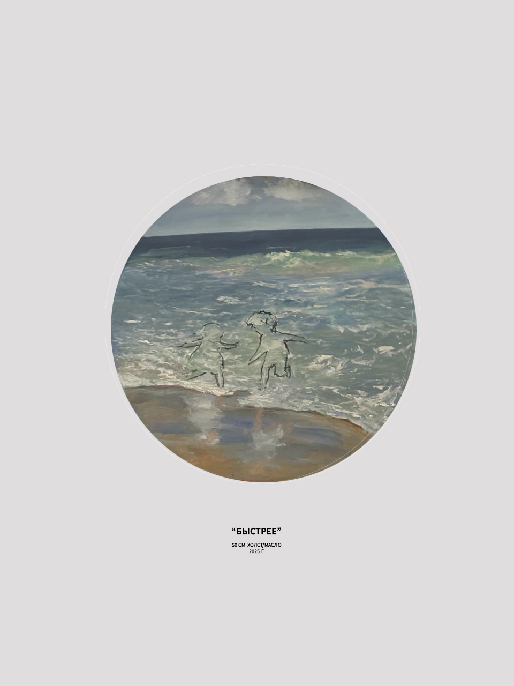

«В своих картинах я обращаюсь к внутреннему ребенку каждого — к триггерам, точкам формирования нейронных связей... Вода соединяет прошлое и настоящее.»
Мое творчество исследует эмоциональную память, текучесть момента и глубокую связь между внешними стихиями и внутренними состояниями человека.





Выставки
-
2025
«Амплитуда»
Симферополь, Крым
-
2025
«Show Up 2»
ЦСИ, Ярославль
-
2024
Лауреат I степени
Всероссийский конкурс «Жар-Птица России»
О художнике
Анна Крас работает преимущественно в технике масляной живописи, исследуя тонкую грань между реализмом и абстрактным ощущением пространства. Вода в ее работах выступает центральной метафорой жизненного потока и памяти. Работы находятся в частных коллекциях в России и за рубежом.